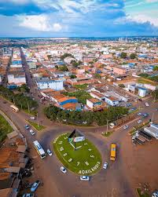

Açailândia é uma cidade localizada no sul do estado do Maranhão. Ela é conhecida por sua importância econômica, especialmente nos setores da indústria, comércio e agricultura.
A cidade possui uma população acolhedora e é considerada uma das principais cidades da região tocantina. Açailândia também é conhecida pela sua forte atividade ferroviária e desenvolvimento urbano.
